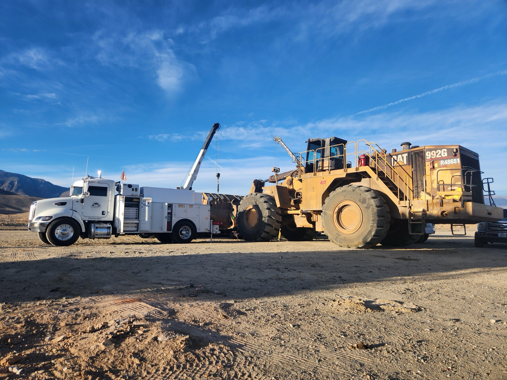
On-Site Heavy Equipment Repair Across Nevada & Central California
Our 11 technicians drive our 10 field service trucks from our yard in Fernley to stopped machines on job sites and in mines. They work anywhere in Nevada, and in California from Sacramento to Bakersfield. A technician usually reaches the machine the day after you call, and sometimes the same day.
- Arrival
- Next day, sometimes the same day
- Dealer crews
- Often one to three weeks
- Fleet
- 10 service trucks, 11 technicians
- Machines
- Any make, including machines we didn’t sell
Field Service Coverage Across Nevada & California
Our service trucks leave from 2366 Resource Dr in Fernley, east of Reno on Interstate 80. They work anywhere in Nevada, and in California from Sacramento south to Bakersfield. Tap an area below to zoom the map to the towns and highways our trucks cover there.
Our trucks work anywhere in Nevada, in California from Sacramento south to Bakersfield, and in Bishop and Mammoth Lakes on US-395. Give dispatch the site address, the nearest cross streets, or the mine name, and we confirm the visit and its travel time on the call.
Our yard sits on Interstate 80 in Fernley, so job sites in Reno, Carson City, Fallon, and the towns between them are the shortest drives our trucks make.
Our crews work at mines and quarries along Interstate 80 east through Lovelock, Winnemucca, Battle Mountain, and Elko. A mine job can take a few hours or several weeks.
US-95 takes our trucks south through Hawthorne and Tonopah to Las Vegas. Travel time is billed from Fernley and back, so we plan central and southern Nevada visits with you on the call.
In California, our trucks take Interstate 80 to Sacramento and Highway 99 south through Stockton, Modesto, and Fresno to Bakersfield.
Our field service trucks work at job sites along US-395, which runs south from Carson City along the eastern Sierra to Mammoth Lakes and Bishop.
The shaded areas are approximate, and dispatch confirms your site on the call.
Field Service Calls Start From the Symptom, Not a Diagnosis
Dispatch chooses the technician and loads the truck based on the symptoms you describe. Tell us what the machine still does, what it stopped doing, and when the problem started. Mention any warning light or error code on the display, and any repair someone has already tried. The technician finds the cause at the machine, so no one on your crew has to diagnose the fault before calling.
Is the Machine Holding Up a Job Right Now?
Your answer shows whether to call dispatch now or send the details. A person on our service team answers every call and reads every text and request.
The office phone in Fernley takes calls and texts. The office isn’t staffed around the clock, so a call, text, or request sent after hours is answered the next day. Pick the answer that fits your job, and the next step shows here.
Call Dispatch to Get a Truck Scheduled
Tell dispatch the make, where the machine is sitting, and what it stopped doing. You can text the serial number and photos after the call.
Calls and texts go to our service team in FernleySend the Details, and We’ll Call to Schedule the Visit
The request below asks where the machine is, what make and model it is, and what changed. Our service team then calls or texts you to set the day the technician arrives.
No field in the request is requiredGet Everyone Clear of the Machine, Then Call
Do not go back to read the serial plate or take photos. Tell us what happened and where the machine is, and that is enough for us to start.
If anyone is hurt, call 911 before you call usField Service Request & Photo Upload
Dispatch uses your answers below to choose the technician and load the tools and parts for the first trip. No field is required, so a request with only the site and the make still reaches the service team. You can text the serial number and more photos to (775) 625-0062 later.
The copy button puts this request on your clipboard as labeled lines for an email, a work order, or a purchase order.
Arrival Times, Service Trucks & Field Technician Qualifications
A dealer’s field crew can take one to three weeks to reach a breakdown. Our technician usually reaches the machine in a crane service truck the day after you call, so a stopped machine does not sit on a waiting list.
Days From Your Call to a Technician at the Machine
Dealer field crews serve their largest customers first, so a contractor who calls with one stopped machine often waits. When a large dealer pitched two loaders to a customer we were also quoting, it told that customer to expect two to three weeks for a technician after a breakdown.
When every crew is already out on a job, our founder drives a service truck to the job himself.
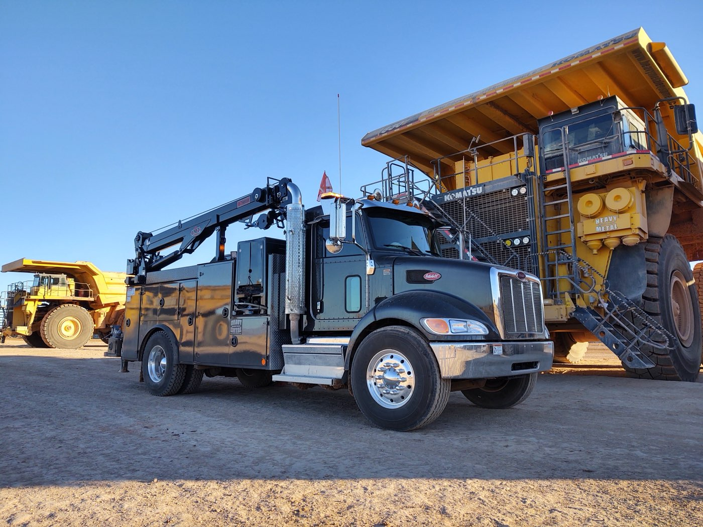
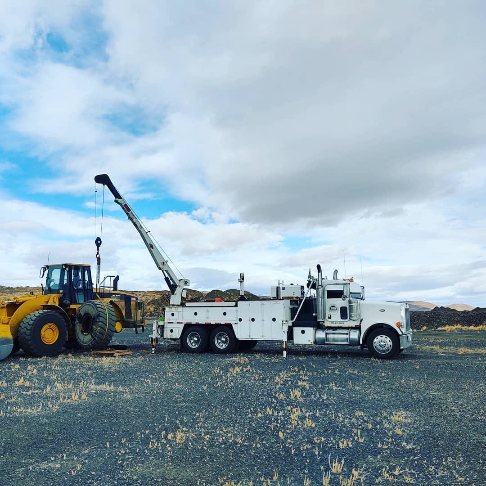
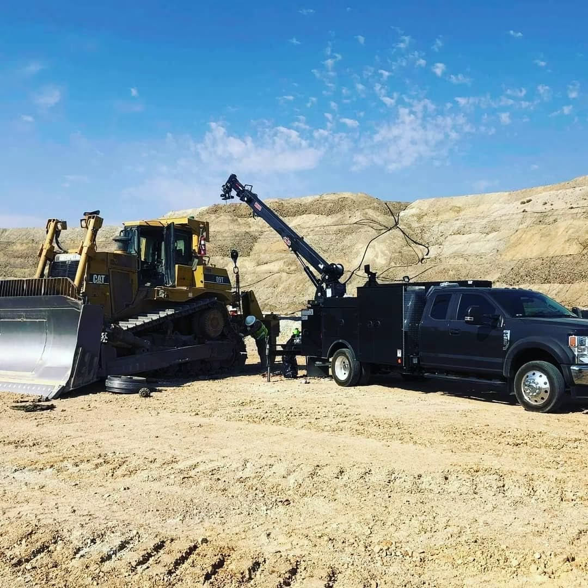
What Arrives With the Technician
Service truck- CraneA truck-mounted crane lifts wheels, engines, and heavy components on and off the machine where it stopped.
- Tool compartmentsSide compartments carry the hand tools, power tools, and common parts for the repair.
- The machineOur crews repair machines as large as mining haul trucks at the pit, without hauling them to a shop.
- Crane boomThe boom swings out over the machine to lift a wheel and tire on or off the axle.
- Wheel and tireThe crane holds a loader wheel and tire that came off at the job site instead of in a shop.
- Truck bodyThe truck parks beside the machine and carries its own generator and tools, so the repair needs no power or lifting equipment from your site.
- TechnicianOne of our technicians, in a hard hat and high-visibility vest, works at the undercarriage of a Cat D9T dozer.
- CraneThe truck’s crane stands ready to lift heavy undercarriage parts off and on.
- Dozer trackThe dozer stays where it was working while the technician repairs it.
- 11 Technicians
Our Own Field Technicians
Eleven DBM technicians work from our trucks and our shop, and we’re hiring one more.
- XCMG Factory Trained
Factory Training
Three of our technicians completed XCMG factory training in August 2026. Our crews also repair Cat, Case, and other makes.
- MSHA Part 46 · 48
Mine Site Readiness
Field technicians hold MSHAMine Safety and Health Administration, the federal agency that sets safety training rules for mines. Part 46 and Part 48 training for surface mines and arrive with their own PPEPersonal protective equipment, such as hard hats, safety glasses, and high-visibility vests..
- 0 Lost-Time Accidents
Safety Record
In 10 years, no one on our crew has missed work because of an injury on the job.
Diagnosis, Parts Approval & Field Service Billing
After the technician finds the fault at the machine, we call or text you with the part that failed, what the parts cost, and how long they take to arrive. We order nothing until you approve it.
How Field Service Is Billed
Dispatch tells you the billing terms when it schedules the visit, so the only new costs after the diagnosis are the parts and the repair you approve.
- TRAVEL
- We bill travel time portal-to-portal, from our yard in Fernley to the machine and back, so a job near Reno has less travel time to pay for than one in Winnemucca or Bakersfield.
- CALL-OUT
- A flat-rate call-out minimum covers bringing the truck out and the technician’s first diagnosis at the machine.
- PARTS
- We call or text you with each part’s cost and how long it takes to arrive, and we order nothing until you approve it.
- OVERNIGHT
- When the normal wait for a part is too long for your job, we can ship it overnight at an added cost.
- STANDARD
- We repair the machine back to the way the factory built it rather than patching it to get it moving.
How a Field Service Call Runs
STEP 1 OF 5Field Service Jobs at Mines, Pits & Job Sites
The six photos below come from DBM field jobs. In them, crane trucks lift engines, a loader’s lift arm, and an excavator’s upper structure off machines that stayed in the pit or on the job site. One photo shows a repair done in heavy snow.
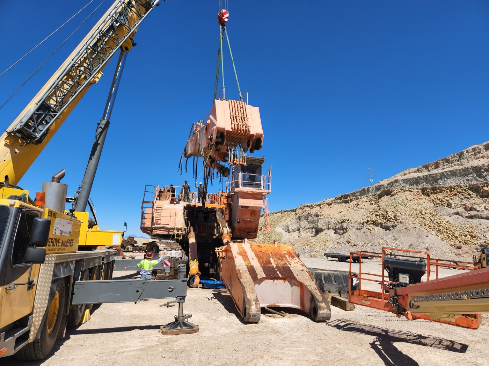
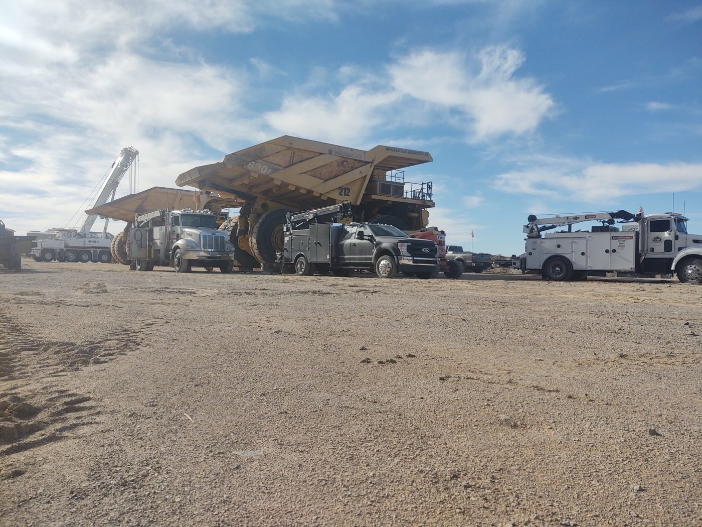
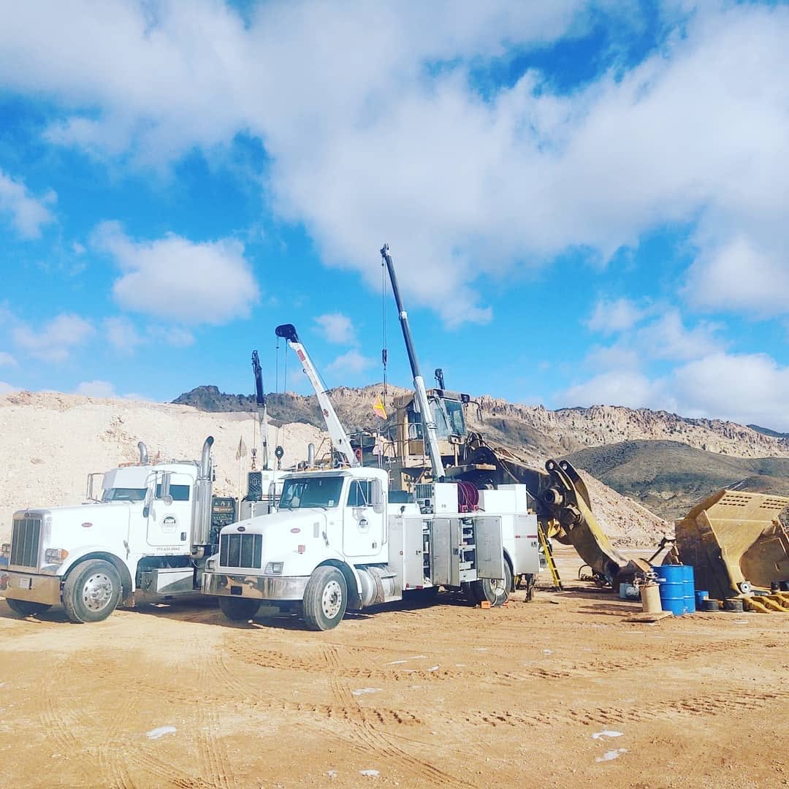
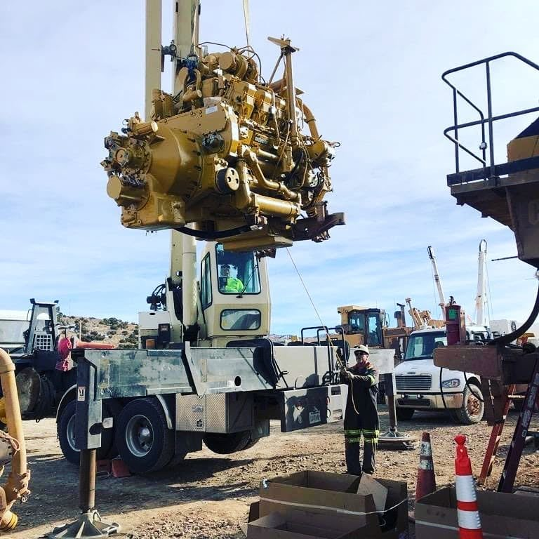
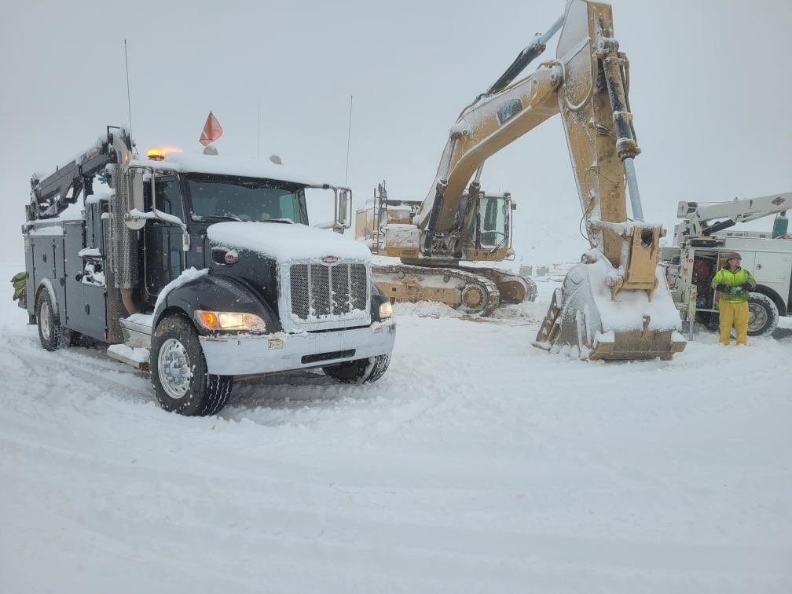
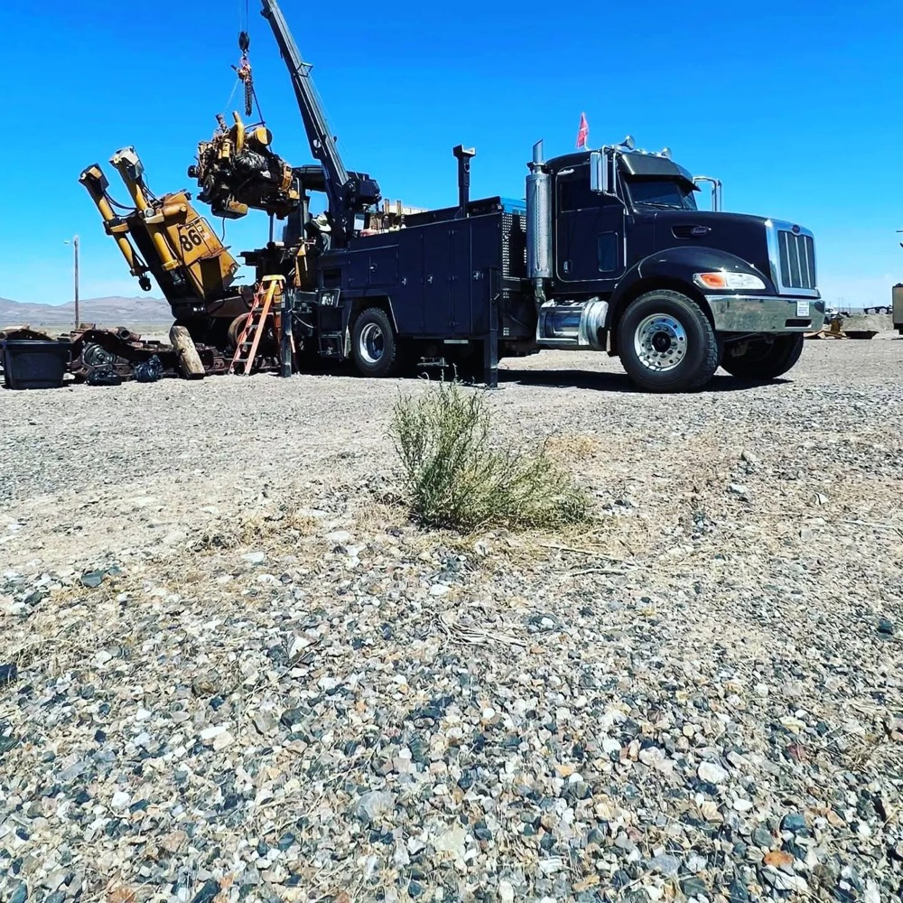
Rental Machines During an Extended Field Repair
When a repair will keep your machine down for days or weeks, we put a rental machine on your site so the work keeps going. We plan the repair and the rental together. We rent mostly by the month to contractors and commercial operators, not homeowners. Some large machines need a three-month minimum.
Once, a customer’s compactor broke down right after the customer agreed to buy it, and our fleet had no second compactor to send. We rented one from a competitor and paid for it ourselves until the customer’s machine was running again.
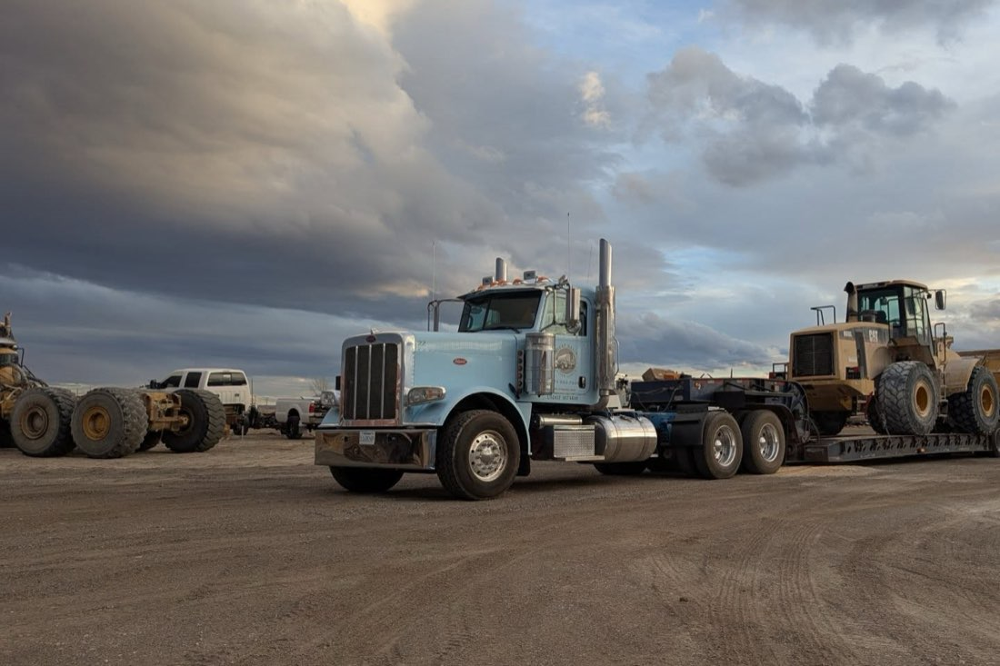
Add a Rental to Your RequestTap this card to tick the rental box in the request above. Then say in the description field what work has to keep going and for how long.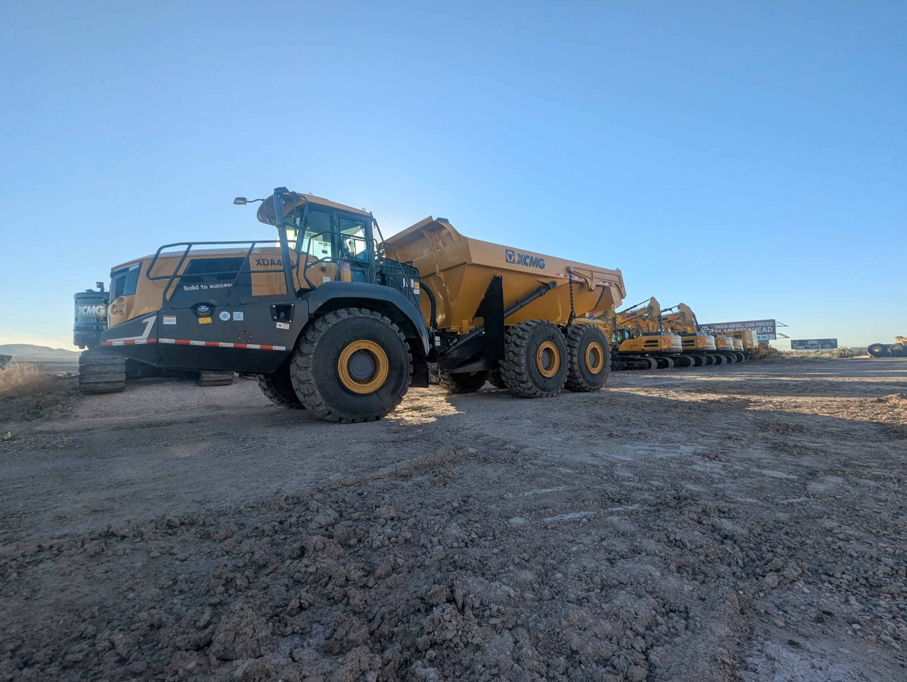
See the Rental FleetIf a machine you rent from us breaks down and we can’t fix it the same day, we take those days off your rent.Field Service Questions
Calls and texts to (775) 625-0062 reach a person on our service team in Fernley, who answers any question this list leaves open.
Call or text (775) 625-0062Our trucks go anywhere in Nevada, to California from Sacramento south to Bakersfield, and to Bishop and Mammoth Lakes. They leave from our yard in Fernley, east of Reno on Interstate 80. Dispatch tells you the travel time to your site on the call.
A technician usually reaches the machine the day after you call and sometimes the same day. Our office isn’t staffed around the clock, so a call, text, or request sent after hours is answered the next day.
Yes. We repair XCMG machines as the exclusive XCMG dealer, and our field crews also repair Cat, Case, and other makes, including machines you bought from another dealer.
Tell us what was done, which parts were replaced, and what the machine still does. The technician then starts a fresh diagnosis instead of repeating the earlier repair.
Most parts reach our Fernley yard within 48 hours, and we can ship parts overnight at an added cost when the job can’t wait. We tell you the cost and the wait first, and we order nothing until you decide.
Yes. Our crews work at mines and quarries on jobs that run from a few hours to several weeks. Our field technicians hold MSHA Part 46 and Part 48 training for surface mines. Tell dispatch the site’s access, badge, and safety rules when you call.
Calls, texts, and requests go to our service team in Fernley, which schedules the technician and calls or texts you back. You can always call (775) 625-0062 without filling in a form.
Specialty Repairs From the Same Field Crews
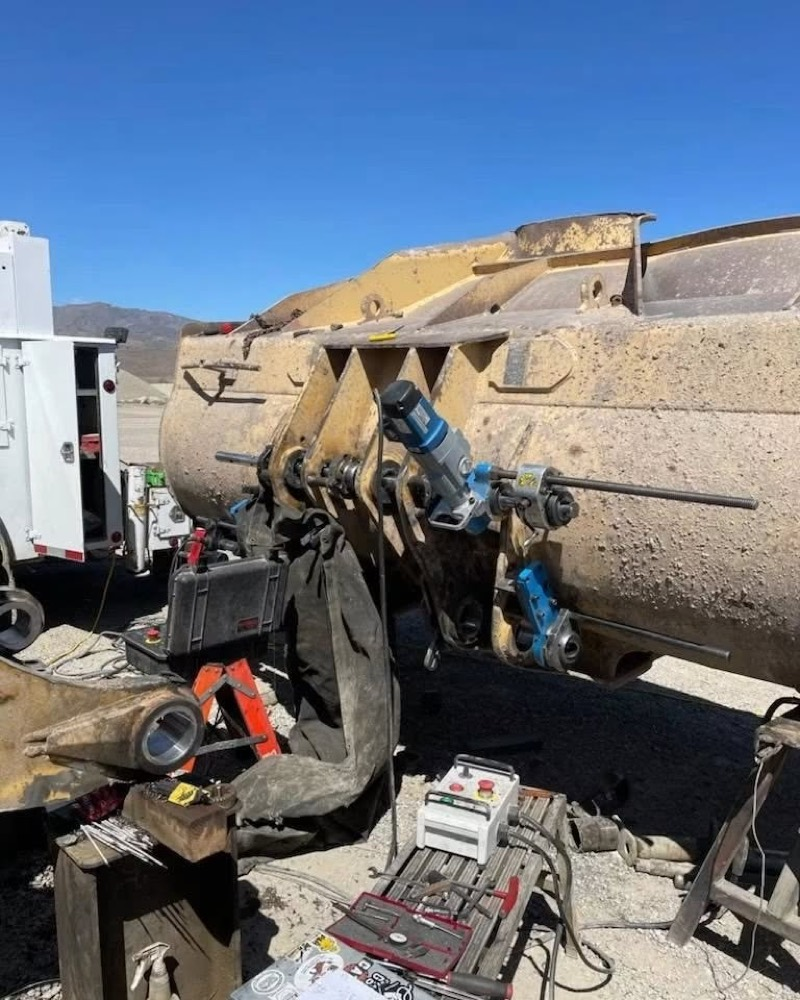
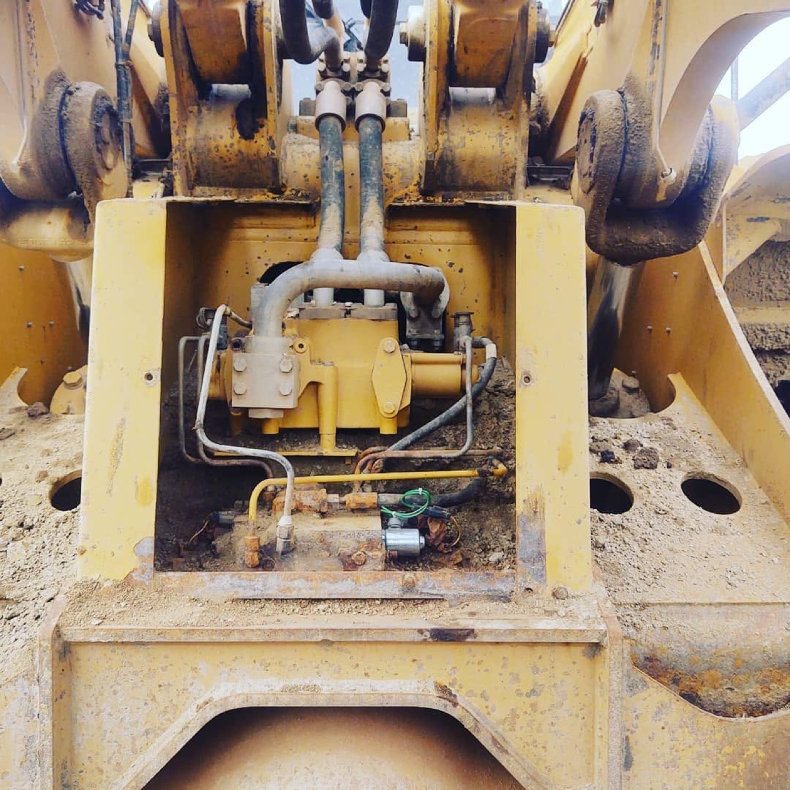
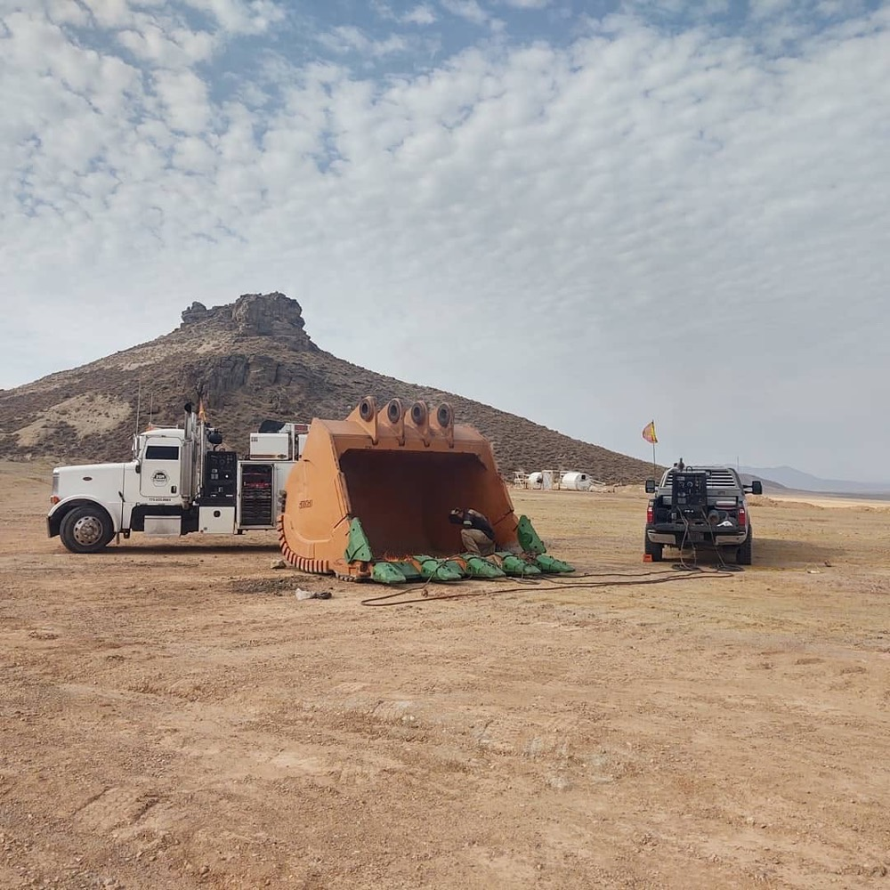
Line Boring, Hydraulic Repair & Welding From the Same Trucks
The crew that answers a breakdown call also line bores worn pin joints and welds cracked booms and buckets where the machine stands, so the machine stays on the job site instead of going to a machine shop. The same crew traces and repairs hydraulic leaks at the machine, and only a cylinder that needs a full rebuild comes back to our Fernley shop.
Portable boring bars machine worn, oval pin bores back to round at the jobsite, so the machine stays assembled where it stopped.
Field Service Dispatch for a Stopped Machine
Tell us where the machine is, the make and model, and what it stopped doing. Text photos of the problem to (775) 625-0062 so the technician brings the right tools and parts.
Our yard and shop are at 2366 Resource Dr, Fernley, NV 89408.